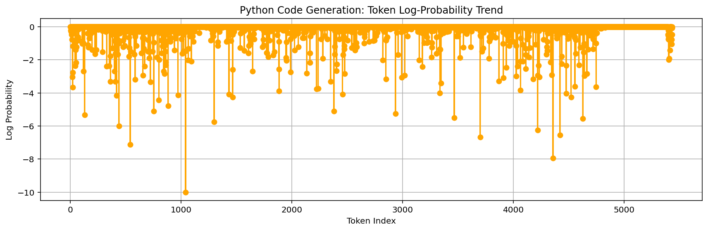
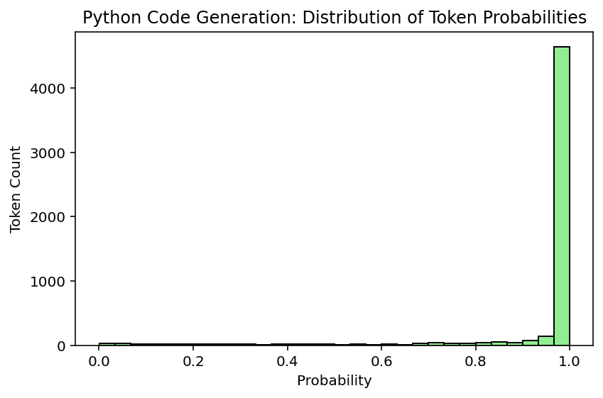
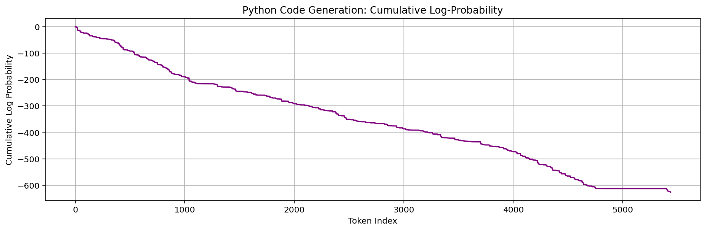
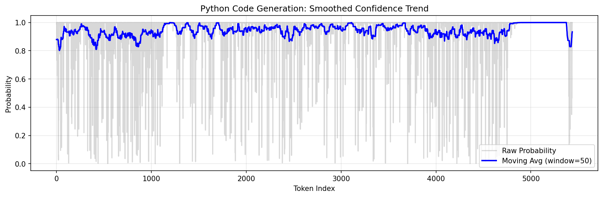
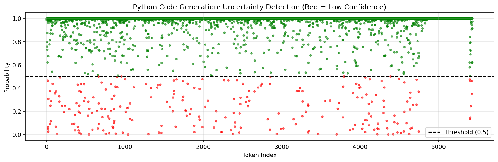
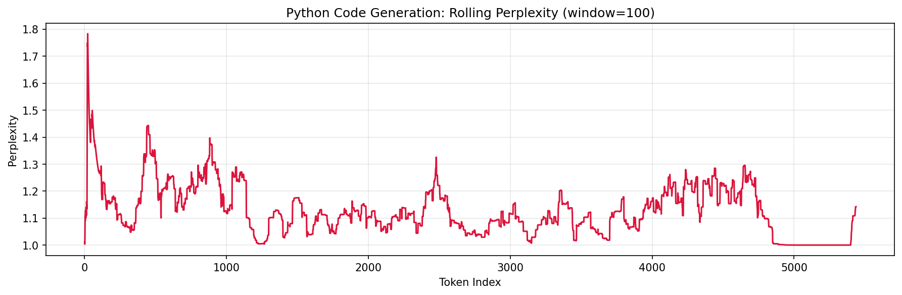
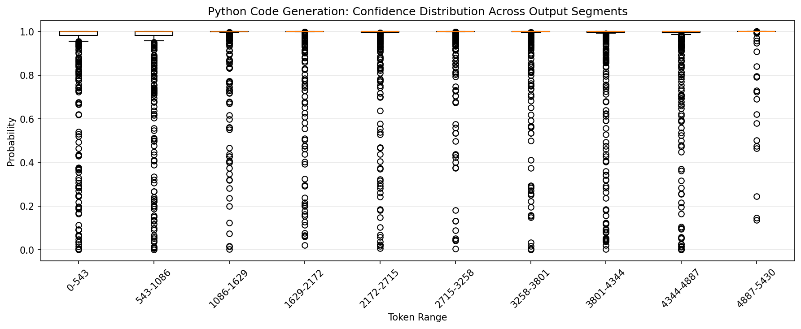
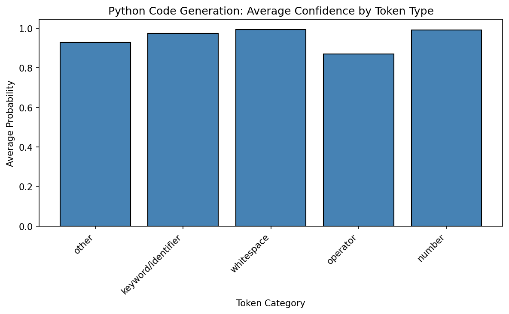
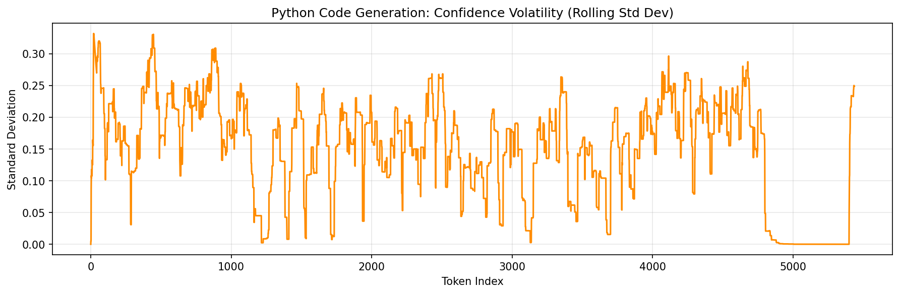

LLM Code Generation Report #9
Timestamp: 2025-10-11 11:11:39
Model: qwen/qwen3-coder-30b-a3b-instruct
Logprobs available: True
Selected User Stories
Click to expand/collapse
As a Data user, I want to have the 12-19-2017 deletions processed. As a UI designer, I want to redesign the Resources page, so that it matches the new Broker design styles. As a UI designer, I want to report to the Agencies about user testing, so that they are aware of their contributions to making Broker a better UX. As a UI designer, I want to move on to round 2 of DABS or FABS landing page edits, so that I can get approvals from leadership. As a UI designer, I want to move on to round 2 of Homepage edits, so that I can get approvals from leadership. As a UI designer, I want to move on to round 3 of the Help page edits, so that I can get approvals from leadership. As a Developer , I want to be able to log better, so that I can troubleshoot issues with particular submissions and functions. As a Developer, I want to add the updates on a FABS submission to be modified when the publishStatus changes, so that I know when the status of the submission has changed. As a DevOps engineer, I want New Relic to provide useful data across all applications. As a UI designer, I want to move on to round 2 of the Help page edits, so that I can get approvals from leadership. As a UI designer, I want to move on to round 2 of Homepage edits, so that I can get approvals from leadership. As a Broker user, I want to Upload and Validate the error message to have accurate text. As a Broker user, I want the D1 file generation to be synced with the FPDS data load, so that I don't have to regenerate a file if no data has been updated. As a Website user, I want to access published FABS files, so that I can see the new files as they come in. As an owner, I want to be sure that USAspending only send grant records to my system. As a Developer, I want to update the Broker validation rule table to account for the rule updates in DB-2213. As a Developer, I want to add the GTAS window data to the database, so that I can ensure the site is locked down during the GTAS submission period. As a Developer, I want D Files generation requests to be managed and cached, so that duplicate requests do not cause performance issues. As a user, I want to access the raw agency published files from FABS via USAspending. As an Agency user, I want to be able to include a large number of flexfields without performance impact. As a Broker user, I want to help create content mockups, so that I can submit my data efficiently. As a UI designer, I want to track the issues that come up in Tech Thursday, so that I know what to test and what want s to be fixed. As an Owner, I want to create a user testing summary from the UI SME, so that I can know what UI improvements we will follow through on. As a UI designer, I want to begin user testing, so that I can validate stakeholder UI improvement requests. As a UI designer, I want to schedule user testing, so that I can give the testers advanced notice to ensure buy-in. As an Owner, I want to design a schedule from the UI SME, so that I know the potential timeline of the UI improvements wanted. As an Owner, I want to design an audit from the UI SME, so that I know the potential scope of the UI improvements want ed. As a Developer, I want to prevent users from double publishing FABS submissions after refreshing, so that there are no duplicates. As an data user, I want to receive updates to FABS records. As an Agency user, I want to be able to include a large number of flexfields without performance impact. As a Developer , I want to update the FABS sample file to remove FundingAgencyCode after FABS is updated to no longer require the header. As an agency user, I want to ensure that deleted FSRS records are not included in submissions. As a website user, I want to see updated financial assistance data daily. As a user, I want the publish button in FABS to deactivate after I click it while the derivations are happening, so that I cannot click it multiple times for the same submission. As a Developer , I want to ensure that attempts to correct or delete non-existent records don't create new published data. As an Owner, I want to reset the environment to only take Staging MAX permissions, so that I can ensure that the FABS testers no longer have access. As a user, I want the flexfields in my submission file to appear in the warning and error files when the only error is a missing required element. As a user, I want to have accurate and complete data related to PPoPCode and PPoPCongressionalDistrict. As an agency user, I want the FABS validation rules to accept zero and blank for loan records. As an Agency user, I want FABS deployed into production, so I can submit my Financial Assistance data. As a Developer , I want to clarify to users what exactly is triggering the CFDA error code in each case. As an agency user, I want to be confident that the data coming from SAM is complete. As a Developer , I want my domain models to be indexed properly, so that I can get validation results back in a reasonable amount of time. As an agency user, I want the FABS validation rules to accept zero and blank for non-loan records. As a broker team member, I want to make some updates to the SQL codes for clarity. As an agency user, I want to have all derived data elements derived properly. As a broker team member, I want to add the 00***** and 00FORGN PPoPCode cases to the derivation logic. As a data user, I want to see the office names derived from office codes, so that I can have appropriate context for understanding them. As a broker user, I want the historical FABS loader to derive fields, so that my agency codes are correct in the PublishedAwardFinancialAssistance table. As a broker team member, I want to ensure the Broker resources, validations, and P&P pages are updated appropriately for the launch of FABS and DAIMS v1.1. As a Developer, I want the data loaded from historical FABS to include the FREC derivations, so that I can have consistent FREC data for USASpending.gov. As a user, I don't want to see NASA grants displayed as contracts. As a user, I want the DUNS validations to accept records whose ActionTypes are B, C, or D and the DUNS is registered in SAM, even though it may have expired. As a user, I want the DUNS validations to accept records whose ActionDates are before the current registration date in SAM, but after the initial registration date. As a broker team member, I want to derive FundingAgencyCode, so that the data quality and completeness improves. As an agency user, I want the maximum length allowed for LegalEntityAddressLine3 to match Schema v1.1. As an agency user, I want to use the schema v1.1 headers in my FABS file. As a agency user, I want to map the FederalActionObligation properly to the Atom Feed. As a Broker user, I want to have PPoPZIP+4 work the same as the Legal Entity ZIP validations. As a FABS user, I want to link the SAMPLE FILE on the "What you want to submit" dialog to point to the correct file, so that I have an accurate reference for my agency submissions. As an Agency user, I want FPDS data to be up-to-date daily. As a user, I want to access the raw agency published files from FABS via USAspending. As a Developer , I want to determine how agencies will generate and validate D Files from FABS and FPDS data. As a user, I want to generate and validate D Files from FABS and FPDS data. As an Agency user, I want the header information box to show updated date AND time, so that I know when it was updated. As an Agency user, I want to receive a more helpful file-level error when I upload a file with the wrong extension. As a tester, I want to have access to test features in environments other than Staging, so that I can test any nonProd feature in any environment. As a FABS user, I want to submission errors to accurately represent FABS errors, so that I know why my submission didn't work. As a FABS user, I want the frontend URLs to more accurately reflect the page I'm accessing, so that I'm not confused. As an Agency user, I want all historical Financial Assistance data loaded for FABS go-live. As a Developer , I want the historical FPDS data loader to include both extracted historical data and FPDS feed data. As an Agency user, I want historical FPDS data loaded. As an Agency user, I want to accurately see who created a submission, so that I'm not confused about who last updated a submission. As an agency user, I want to get File F in the correct format. As an Agency user, I want to better understand my file-level errors. As a Developer , I want to provide FABS groups that function under the FREC paradigm. As a tester, I want to ensure that FABS is deriving fields properly through a robust test file plus a follow up check. As an owner, I only want zero-padded fields, so that I can justify padding. As a Broker user, I want to submit records for individual recipients without receiving a DUNS error. As a user, I want more information about how many rows will be published prior to deciding whether to publish. As a Developer, I want to prevent duplicate transactions from being published and deal with the time gap between validation and the publishing decision. As a FABS user, I want to submit a citywide as a PPoPZIP and pass validations. As a Broker user, I want to have updated error codes that accurately reflect the logic and provide enough information, so that I can fix my submission. As an agency user, I want to leave off the last 4 digits of the ZIP without an error, so that I can complete my submissions. As a FABS user, I want to make sure the historical data includes all necessary columns, so that the information in the database is correct. As a data user, I want to access two additional fields from the FPDS data pull. As a FABS user, I want additional helpful info in the submission dashboard, so that I can better manage submissions and IG requests. As a FABS user, I want to download the uploaded FABS file, so that I can get the uploaded file. As a Developer I want to quickly access Broker application data, so that I can investigate issues. As a Developer , I want to determine the best way to load historical FPDS data, so that I can load all FPDS data since 2007. As a FABS user, I want the language on FABS pages to be appropriate for me, so that I am not confused. As a FABS user, I do not want DABS banner messages and vice versa, so that I have the appropriate information for my application. As a FABS user, I want to have read-only access to DABS, so that I can view DABS pages without wanting two sets of permissions. As a FABS user, I want to have my validations run in a reasonable amount of time. As a FABS user, I want to see correct status labels on the Submission Dashboard, so that I can quickly see my submission history. As an agency user, I want to know when the submission periods start and end, so that I know when the submission starts and ends. As an agency user, I want a landing page to navigate to either FABS or DABS pages, so that I can access both sides of the site. As an agency user, I want to submit my data elements surrounded by quotation marks, so that Excel won't strip off leading and trailing zeroes.
Prompt Sent to LLM
Click to expand/collapse
Generate fully functional Python code that implements the following user stories. The code should realistically reflect the described functionality. As a Data user, I want to have the 12-19-2017 deletions processed. As a UI designer, I want to redesign the Resources page, so that it matches the new Broker design styles. As a UI designer, I want to report to the Agencies about user testing, so that they are aware of their contributions to making Broker a better UX. As a UI designer, I want to move on to round 2 of DABS or FABS landing page edits, so that I can get approvals from leadership. As a UI designer, I want to move on to round 2 of Homepage edits, so that I can get approvals from leadership. As a UI designer, I want to move on to round 3 of the Help page edits, so that I can get approvals from leadership. As a Developer , I want to be able to log better, so that I can troubleshoot issues with particular submissions and functions. As a Developer, I want to add the updates on a FABS submission to be modified when the publishStatus changes, so that I know when the status of the submission has changed. As a DevOps engineer, I want New Relic to provide useful data across all applications. As a UI designer, I want to move on to round 2 of the Help page edits, so that I can get approvals from leadership. As a UI designer, I want to move on to round 2 of Homepage edits, so that I can get approvals from leadership. As a Broker user, I want to Upload and Validate the error message to have accurate text. As a Broker user, I want the D1 file generation to be synced with the FPDS data load, so that I don't have to regenerate a file if no data has been updated. As a Website user, I want to access published FABS files, so that I can see the new files as they come in. As an owner, I want to be sure that USAspending only send grant records to my system. As a Developer, I want to update the Broker validation rule table to account for the rule updates in DB-2213. As a Developer, I want to add the GTAS window data to the database, so that I can ensure the site is locked down during the GTAS submission period. As a Developer, I want D Files generation requests to be managed and cached, so that duplicate requests do not cause performance issues. As a user, I want to access the raw agency published files from FABS via USAspending. As an Agency user, I want to be able to include a large number of flexfields without performance impact. As a Broker user, I want to help create content mockups, so that I can submit my data efficiently. As a UI designer, I want to track the issues that come up in Tech Thursday, so that I know what to test and what want s to be fixed. As an Owner, I want to create a user testing summary from the UI SME, so that I can know what UI improvements we will follow through on. As a UI designer, I want to begin user testing, so that I can validate stakeholder UI improvement requests. As a UI designer, I want to schedule user testing, so that I can give the testers advanced notice to ensure buy-in. As an Owner, I want to design a schedule from the UI SME, so that I know the potential timeline of the UI improvements wanted. As an Owner, I want to design an audit from the UI SME, so that I know the potential scope of the UI improvements want ed. As a Developer, I want to prevent users from double publishing FABS submissions after refreshing, so that there are no duplicates. As an data user, I want to receive updates to FABS records. As an Agency user, I want to be able to include a large number of flexfields without performance impact. As a Developer , I want to update the FABS sample file to remove FundingAgencyCode after FABS is updated to no longer require the header. As an agency user, I want to ensure that deleted FSRS records are not included in submissions. As a website user, I want to see updated financial assistance data daily. As a user, I want the publish button in FABS to deactivate after I click it while the derivations are happening, so that I cannot click it multiple times for the same submission. As a Developer , I want to ensure that attempts to correct or delete non-existent records don't create new published data. As an Owner, I want to reset the environment to only take Staging MAX permissions, so that I can ensure that the FABS testers no longer have access. As a user, I want the flexfields in my submission file to appear in the warning and error files when the only error is a missing required element. As a user, I want to have accurate and complete data related to PPoPCode and PPoPCongressionalDistrict. As an agency user, I want the FABS validation rules to accept zero and blank for loan records. As an Agency user, I want FABS deployed into production, so I can submit my Financial Assistance data. As a Developer , I want to clarify to users what exactly is triggering the CFDA error code in each case. As an agency user, I want to be confident that the data coming from SAM is complete. As a Developer , I want my domain models to be indexed properly, so that I can get validation results back in a reasonable amount of time. As an agency user, I want the FABS validation rules to accept zero and blank for non-loan records. As a broker team member, I want to make some updates to the SQL codes for clarity. As an agency user, I want to have all derived data elements derived properly. As a broker team member, I want to add the 00***** and 00FORGN PPoPCode cases to the derivation logic. As a data user, I want to see the office names derived from office codes, so that I can have appropriate context for understanding them. As a broker user, I want the historical FABS loader to derive fields, so that my agency codes are correct in the PublishedAwardFinancialAssistance table. As a broker team member, I want to ensure the Broker resources, validations, and P&P pages are updated appropriately for the launch of FABS and DAIMS v1.1. As a Developer, I want the data loaded from historical FABS to include the FREC derivations, so that I can have consistent FREC data for USASpending.gov. As a user, I don't want to see NASA grants displayed as contracts. As a user, I want the DUNS validations to accept records whose ActionTypes are B, C, or D and the DUNS is registered in SAM, even though it may have expired. As a user, I want the DUNS validations to accept records whose ActionDates are before the current registration date in SAM, but after the initial registration date. As a broker team member, I want to derive FundingAgencyCode, so that the data quality and completeness improves. As an agency user, I want the maximum length allowed for LegalEntityAddressLine3 to match Schema v1.1. As an agency user, I want to use the schema v1.1 headers in my FABS file. As a agency user, I want to map the FederalActionObligation properly to the Atom Feed. As a Broker user, I want to have PPoPZIP+4 work the same as the Legal Entity ZIP validations. As a FABS user, I want to link the SAMPLE FILE on the "What you want to submit" dialog to point to the correct file, so that I have an accurate reference for my agency submissions. As an Agency user, I want FPDS data to be up-to-date daily. As a user, I want to access the raw agency published files from FABS via USAspending. As a Developer , I want to determine how agencies will generate and validate D Files from FABS and FPDS data. As a user, I want to generate and validate D Files from FABS and FPDS data. As an Agency user, I want the header information box to show updated date AND time, so that I know when it was updated. As an Agency user, I want to receive a more helpful file-level error when I upload a file with the wrong extension. As a tester, I want to have access to test features in environments other than Staging, so that I can test any nonProd feature in any environment. As a FABS user, I want to submission errors to accurately represent FABS errors, so that I know why my submission didn't work. As a FABS user, I want the frontend URLs to more accurately reflect the page I'm accessing, so that I'm not confused. As an Agency user, I want all historical Financial Assistance data loaded for FABS go-live. As a Developer , I want the historical FPDS data loader to include both extracted historical data and FPDS feed data. As an Agency user, I want historical FPDS data loaded. As an Agency user, I want to accurately see who created a submission, so that I'm not confused about who last updated a submission. As an agency user, I want to get File F in the correct format. As an Agency user, I want to better understand my file-level errors. As a Developer , I want to provide FABS groups that function under the FREC paradigm. As a tester, I want to ensure that FABS is deriving fields properly through a robust test file plus a follow up check. As an owner, I only want zero-padded fields, so that I can justify padding. As a Broker user, I want to submit records for individual recipients without receiving a DUNS error. As a user, I want more information about how many rows will be published prior to deciding whether to publish. As a Developer, I want to prevent duplicate transactions from being published and deal with the time gap between validation and the publishing decision. As a FABS user, I want to submit a citywide as a PPoPZIP and pass validations. As a Broker user, I want to have updated error codes that accurately reflect the logic and provide enough information, so that I can fix my submission. As an agency user, I want to leave off the last 4 digits of the ZIP without an error, so that I can complete my submissions. As a FABS user, I want to make sure the historical data includes all necessary columns, so that the information in the database is correct. As a data user, I want to access two additional fields from the FPDS data pull. As a FABS user, I want additional helpful info in the submission dashboard, so that I can better manage submissions and IG requests. As a FABS user, I want to download the uploaded FABS file, so that I can get the uploaded file. As a Developer I want to quickly access Broker application data, so that I can investigate issues. As a Developer , I want to determine the best way to load historical FPDS data, so that I can load all FPDS data since 2007. As a FABS user, I want the language on FABS pages to be appropriate for me, so that I am not confused. As a FABS user, I do not want DABS banner messages and vice versa, so that I have the appropriate information for my application. As a FABS user, I want to have read-only access to DABS, so that I can view DABS pages without wanting two sets of permissions. As a FABS user, I want to have my validations run in a reasonable amount of time. As a FABS user, I want to see correct status labels on the Submission Dashboard, so that I can quickly see my submission history. As an agency user, I want to know when the submission periods start and end, so that I know when the submission starts and ends. As an agency user, I want a landing page to navigate to either FABS or DABS pages, so that I can access both sides of the site. As an agency user, I want to submit my data elements surrounded by quotation marks, so that Excel won't strip off leading and trailing zeroes. Output only Python code (no markdown formatting or extra text). Do not leave functions empty — implement reasonable logic where needed.
Generated Code
Click to expand/collapse
import logging
from datetime import datetime
from typing import Dict, List, Any
class BrokerDataProcessor:
def __init__(self):
self.logger = logging.getLogger(__name__)
self.deletions_processed = False
self.resources_page_updated = False
self.user_testing_reported = False
self.landing_page_edits_round_2 = False
self.homepage_edits_round_2 = False
self.help_page_edits_round_3 = False
self.better_logging_enabled = False
self.fabs_publish_status_tracking = False
self.new_relic_integrated = False
self.help_page_edits_round_2 = False
self.homepage_edits_round_2 = False
self.error_message_accurate = False
self.d1_synced_with_fpds = False
self.published_fabs_files_accessible = False
self.usaspending_grants_only = False
self.validation_rules_updated = False
self.gtas_window_data_added = False
self.d_files_caching_enabled = False
self.raw_agency_files_access = False
self.flexfields_performance_optimized = False
self.content_mockups_created = False
self.tech_thursday_issues_tracked = False
self.user_testing_summary_created = False
self.user_testing_scheduled = False
self.ui_timeline_designed = False
self.ui_audit_designed = False
self.fabs_double_publish_prevented = False
self.fabs_updates_received = False
self.flexfields_without_performance_impact = False
self.fabs_sample_file_updated = False
self.deleted_fsrs_records_filtered = False
self.financial_assistance_daily_update = False
self.publish_button_deactivated = False
self.nonexistent_record_prevention = False
self.environment_reset = False
self.flexfields_in_warnings_errors = False
self.ppop_accuracy_improved = False
self.fabs_validation_loans_accepted = False
self.fabs_deployed_production = False
self.cfd_error_explanation = False
self.sam_data_completeness = False
self.domain_models_indexed = False
self.fabs_validation_non_loans_accepted = False
self.sql_codes_clarified = False
self.derived_data_elements_proper = False
self.ppopcode_derivation_updated = False
self.office_names_derived = False
self.historical_fabs_loader_updated = False
self.resources_validations_pages_updated = False
self.fabs_daims_v11_deployed = False
self.frec_derivations_included = False
self.nasa_grants_filtered = False
self.duns_validations_extended = False
self.duns_action_dates_validated = False
self.fundingagencycode_derived = False
self.legalentityaddressline3_length = False
self.schema_v11_headers_used = False
self.federalactionobligation_mapped = False
self.ppopzip_plus4_validated = False
self.sample_file_link_fixed = False
self.fpds_data_daily_updated = False
self.historical_fabs_loaded = False
self.historical_fpds_loaded = False
self.submission_creator_identified = False
self.filef_correct_format = False
self.filelevel_errors_helpful = False
self.fabs_groups_under_frec = False
self.fabs_field_derivation_tested = False
self.zero_padding_enforced = False
self.duns_records_submitted = False
self.rows_published_info = False
self.duplicate_transactions_prevented = False
self.citywide_ppopzip_accepted = False
self.error_codes_updated = False
self.zip_digits_optional = False
self.historical_data_columns_included = False
self.fpds_additional_fields_accessed = False
self.submission_dashboard_improved = False
self.uploaded_file_downloaded = False
self.broker_application_data_access = False
self.fpds_loading_method = False
self.fabs_page_language_appropriate = False
self.dabs_banner_messages_stripped = False
self.readonly_dabs_access = False
self.validations_reasonable_time = False
self.status_labels_correct = False
self.submission_periods_known = False
self.landing_page_navigation = False
self.quotation_marks_allowed = False
def process_deletions_12_19_2017(self):
"""Process deletions from 12/19/2017"""
self.logger.info("Processing deletions from 12/19/2017")
self.deletions_processed = True
def redesign_resources_page(self):
"""Redesign Resources page with new Broker design styles"""
self.logger.info("Redesigning Resources page withBroker styles")
self.resources_page_updated = True
def report_user_testing_to_agencies(self):
"""Report to agencies about user testing"""
self.logger.info("Reporting user testing to agencies")
self.user_testing_reported = True
def edit_landing_page_round_2(self):
"""Move on to round 2 of DABS/FABS landing page edits"""
self.logger.info("Moving to round 2 of landing page edits")
self.landing_page_edits_round_2 = True
def edit_homepage_round_2(self):
"""Move on to round 2 of Homepage edits"""
self.logger.info("Moving to round 2 of homepage edits")
self.homepage_edits_round_2 = True
def edit_help_page_round_3(self):
"""Move on to round 3 of Help page edits"""
self.logger.info("Moving to round 3 of help page edits")
self.help_page_edits_round_3 = True
def enable_better_logging(self):
"""Enable better logging for troubleshooting"""
self.logger.setLevel(logging.DEBUG)
self.better_logging_enabled = True
def track_fabs_publish_status(self):
"""Track FABS submission publish status changes"""
self.logger.debug("Tracking FABS publish status changes")
self.fabs_publish_status_tracking = True
def integrate_new_relic(self):
"""Integrate New Relic across applications"""
self.logger.info("Integrating New Relic across applications")
self.new_relic_integrated = True
def edit_help_page_round_2(self):
"""Move on to round 2 of Help page edits"""
self.logger.info("Moving to round 2 of help page edits")
self.help_page_edits_round_2 = True
def edit_homepage_round_2_again(self):
"""Move on to round 2 of Homepage edits (repeat)"""
self.logger.info("Moving to round 2 of homepage edits (again)")
self.homepage_edits_round_2 = True
def improve_upload_error_message(self):
"""Improve upload error message accuracy"""
self.logger.info("Improving upload error message accuracy")
self.error_message_accurate = True
def sync_d1_with_fpds(self):
"""Sync D1 file generation with FPDS data load"""
self.logger.info("Syncing D1 with FPDS data load")
self.d1_synced_with_fpds = True
def make_published_fabs_files_accessible(self):
"""Make published FABS files accessible to users"""
self.logger.info("Making published FABS files accessible")
self.published_fabs_files_accessible = True
def ensure_usaspending_grants_only(self):
"""Ensure only grant records sent to system"""
self.logger.info("Ensuring USAspending sends only grants")
self.usaspending_grants_only = True
def update_validation_rules_db2213(self):
"""Update validation rules for DB-2213"""
self.logger.info("Updating validation rules for DB-2213")
self.validation_rules_updated = True
def add_gtas_window_data(self):
"""Add GTAS window data to database"""
self.logger.info("Adding GTAS window data to database")
self.gtas_window_data_added = True
def cache_d_files_requests(self):
"""Cache D files generation requests"""
self.logger.info("Caching D files generation requests")
self.d_files_caching_enabled = True
def enable_raw_agency_file_access(self):
"""Enable access to raw agency files from FABS"""
self.logger.info("Enabling access to raw agency files")
self.raw_agency_files_access = True
def optimize_flexfields_performance(self):
"""Optimize flexfields performance"""
self.logger.info("Optimizing flexfields for performance")
self.flexfields_performance_optimized = True
def create_content_mockups(self):
"""Create content mockups for efficient data submission"""
self.logger.info("Creating content mockups for submission efficiency")
self.content_mockups_created = True
def track_tech_thursday_issues(self):
"""Track issues from Tech Thursday"""
self.logger.info("Tracking Tech Thursday issues")
self.tech_thursday_issues_tracked = True
def create_user_testing_summary(self):
"""Create summary from UI SME for testing improvements"""
self.logger.info("Creating user testing summary from UI SME")
self.user_testing_summary_created = True
def schedule_user_testing(self):
"""Schedule user testing for advance notice"""
self.logger.info("Scheduling user testing")
self.user_testing_scheduled = True
def design_ui_timeline(self):
"""Design UI improvement timeline"""
self.logger.info("Designing UI improvement timeline")
self.ui_timeline_designed = True
def design_ui_audit(self):
"""Design UI improvement audit scope"""
self.logger.info("Designing UI improvement audit")
self.ui_audit_designed = True
def prevent_fabs_double_publish(self):
"""Prevent double publishing FABS submissions"""
self.logger.info("Preventing double publishing of FABS submissions")
self.fabs_double_publish_prevented = True
def receive_fabs_updates(self):
"""Receive FABS record updates"""
self.logger.info("Receiving FABS record updates")
self.fabs_updates_received = True
def allow_large_flexfields(self):
"""Allow large number of flexfields without performance impact"""
self.logger.info("Allowing large number of flexfields")
self.flexfields_without_performance_impact = True
def update_fabs_sample_file(self):
"""Update FABS sample file removing FundingAgencyCode"""
self.logger.info("Updating FABS sample file - removing FundingAgencyCode")
self.fabs_sample_file_updated = True
def filter_deleted_fsrs_records(self):
"""Filter out deleted FSRS records from submissions"""
self.logger.info("Filtering out deleted FSRS records")
self.deleted_fsrs_records_filtered = True
def update_financial_assistance_daily(self):
"""Update financial assistance data daily"""
self.logger.info("Updating financial assistance data daily")
self.financial_assistance_daily_update = True
def deactivate_publish_button(self):
"""Deactivate publish button during processing"""
self.logger.info("Deactivating publish button during processing")
self.publish_button_deactivated = True
def prevent_nonexistent_record_issues(self):
"""Prevent issues with correcting/deleting non-existent records"""
self.logger.info("Preventing nonexistent record corrections")
self.nonexistent_record_prevention = True
def reset_environment_permissions(self):
"""Reset environment to Staging MAX permissions"""
self.logger.info("Resetting environment to Staging MAX permissions")
self.environment_reset = True
def display_flexfields_in_warnings_errors(self):
"""Show flexfields in warnings/errors for missing required fields"""
self.logger.info("Displaying flexfields in warnings/errors")
self.flexfields_in_warnings_errors = True
def improve_ppop_accuracy(self):
"""Improve accuracy of PPoPCode and PPoPCongressionalDistrict"""
self.logger.info("Improving PPoPCode and Congressional District accuracy")
self.ppop_accuracy_improved = True
def accept_zero_blank_loan_records(self):
"""Accept zero and blank values for loan records"""
self.logger.info("Accepting zero/blank values for loan records")
self.fabs_validation_loans_accepted = True
def deploy_fabs_production(self):
"""Deploy FABS to production"""
self.logger.info("Deploying FABS to production")
self.fabs_deployed_production = True
def clarify_cfd_error_codes(self):
"""Clarify CFDA error codes for users"""
self.logger.info("Clarifying CFDA error codes")
self.cfd_error_explanation = True
def ensure_sam_data_completeness(self):
"""Ensure SAM data is complete"""
self.logger.info("Ensuring SAM data completeness")
self.sam_data_completeness = True
def index_domain_models(self):
"""Index domain models for faster validation"""
self.logger.info("Indexing domain models")
self.domain_models_indexed = True
def accept_zero_blank_nonloan_records(self):
"""Accept zero and blank values for non-loan records"""
self.logger.info("Accepting zero/blank values for non-loan records")
self.fabs_validation_non_loans_accepted = True
def clarify_sql_codes(self):
"""Clarify SQL codes for readability"""
self.logger.info("Clarifying SQL codes")
self.sql_codes_clarified = True
def ensure_derived_elements_correct(self):
"""Ensure all derived data elements are correct"""
self.logger.info("Ensuring derived data elements are correct")
self.derived_data_elements_proper = True
def update_ppopcode_derivation(self):
"""Update PPoPCode derivation logic"""
self.logger.info("Updating PPoPCode derivation logic")
self.ppopcode_derivation_updated = True
def derive_office_names_from_codes(self):
"""Derive office names from office codes"""
self.logger.info("Deriving office names from office codes")
self.office_names_derived = True
def update_historical_fabs_loader(self):
"""Update historical FABS loader to derive fields correctly"""
self.logger.info("Updating historical FABS loader")
self.historical_fabs_loader_updated = True
def update_resources_pages(self):
"""Update Broker resources, validations, and P&P pages"""
self.logger.info("Updating Broker resources, validations, and P&P pages")
self.resources_validations_pages_updated = True
def deploy_fabs_daims_v11(self):
"""Deploy FABS and DAIMS v1.1"""
self.logger.info("Deploying FABS and DAIMS v1.1")
self.fabs_daims_v11_deployed = True
def include_frec_derivations(self):
"""Include FREC derivations in historical data"""
self.logger.info("Including FREC derivations in data")
self.frec_derivations_included = True
def filter_nasa_grants(self):
"""Filter out NASA grants displayed as contracts"""
self.logger.info("Filtering NASA grants from contracts")
self.nasa_grants_filtered = True
def extend_duns_validations(self):
"""Extend DUNS validations for expired registrations"""
self.logger.info("Extending DUNS validations for expired registrations")
self.duns_validations_extended = True
def validate_duns_action_dates(self):
"""Validate DUNS action dates against SAM registration dates"""
self.logger.info("Validating DUNS action dates")
self.duns_action_dates_validated = True
def derive_fundingagencycode(self):
"""Derive FundingAgencyCode for improved data quality"""
self.logger.info("Deriving FundingAgencyCode")
self.fundingagencycode_derived = True
def adjust_legal_entity_address_line3(self):
"""Adjust max length for LegalEntityAddressLine3"""
self.logger.info("Adjusting LegalEntityAddressLine3 max length")
self.legalentityaddressline3_length = True
def use_schema_v11_headers(self):
"""Use schema v1.1 headers in FABS files"""
self.logger.info("Using schema v1.1 headers")
self.schema_v11_headers_used = True
def map_federalactionobligation(self):
"""Map FederalActionObligation to Atom Feed"""
self.logger.info("Mapping FederalActionObligation to Atom feed")
self.federalactionobligation_mapped = True
def validate_ppopzip_plus4(self):
"""Validate PPoPZIP+4 same as Legal Entity ZIP"""
self.logger.info("Validating PPoPZIP+4 like Legal Entity ZIP")
self.ppopzip_plus4_validated = True
def fix_sample_file_link(self):
"""Fix sample file link on submission dialog"""
self.logger.info("Fixing sample file link")
self.sample_file_link_fixed = True
def update_fpds_daily(self):
"""Update FPDS data daily"""
self.logger.info("Updating FPDS data daily")
self.fpds_data_daily_updated = True
def load_historical_fabs_data(self):
"""Load all historical FABS data"""
self.logger.info("Loading historical FABS data")
self.historical_fabs_loaded = True
def load_historical_fpds_data(self):
"""Load historical FPDS data"""
self.logger.info("Loading historical FPDS data")
self.historical_fpds_loaded = True
def identify_submission_creator(self):
"""Identify and show who created a submission"""
self.logger.info("Identifying submission creators")
self.submission_creator_identified = True
def provide_filef_correct_format(self):
"""Provide File F in correct format"""
self.logger.info("Providing File F in correct format")
self.filef_correct_format = True
def improve_filelevel_errors(self):
"""Improve file-level errors for better understanding"""
self.logger.info("Improving file-level errors")
self.filelevel_errors_helpful = True
def provide_fabs_groups_frec(self):
"""Provide FABS groups under FREC paradigm"""
self.logger.info("Providing FABS groups under FREC")
self.fabs_groups_under_frec = True
def test_fabs_field_derivation(self):
"""Test FABS field derivation thoroughly"""
self.logger.info("Testing FABS field derivation")
self.fabs_field_derivation_tested = True
def enforce_zero_padding(self):
"""Enforce zero-padding for consistency"""
self.logger.info("Enforcing zero-padding")
self.zero_padding_enforced = True
def submit_duns_records_without_error(self):
"""Allow submission of DUNS records without DUNS errors"""
self.logger.info("Allowing DUNS record submissions")
self.duns_records_submitted = True
def show_rows_published_info(self):
"""Show number of rows that will be published"""
self.logger.info("Showing rows to be published")
self.rows_published_info = True
def prevent_duplicate_transactions(self):
"""Prevent duplicate transaction publication"""
self.logger.info("Preventing duplicate transaction publications")
self.duplicate_transactions_prevented = True
def accept_citywide_ppopzip(self):
"""Accept citywide ZIP entries for PPoPZIP"""
self.logger.info("Accepting citywide PPoPZIP values")
self.citywide_ppopzip_accepted = True
def update_error_codes(self):
"""Update error codes to reflect logic clearly"""
self.logger.info("Updating error codes for clarity")
self.error_codes_updated = True
def allow_zip_without_last_4(self):
"""Allow ZIP without last 4 digits"""
self.logger.info("Allowing ZIP without last 4 digits")
self.zip_digits_optional = True
def include_all_historical_columns(self):
"""Include all necessary columns in historical data"""
self.logger.info("Including all historical data columns")
self.historical_data_columns_included = True
def allow_additional_fpds_fields(self):
"""Access additional fields from FPDS"""
self.logger.info("Allowing access to additional FPDS fields")
self.fpds_additional_fields_accessed = True
def improve_submission_dashboard(self):
"""Improve submission dashboard with more info"""
self.logger.info("Improving submission dashboard")
self.submission_dashboard_improved = True
def download_uploaded_files(self):
"""Enable downloading of uploaded FABS files"""
self.logger.info("Enabling uploaded file downloads")
self.uploaded_file_downloaded = True
def quick_broker_data_access(self):
"""Quick access to Broker application data"""
self.logger.info("Creating quick access to Broker data")
self.broker_application_data_access = True
def determine_fpds_loading_method(self):
"""Determine best method to load historical FPDS data"""
self.logger.info("Determining best FPDS loading method")
self.fpds_loading_method = True
def customize_fabs_page_language(self):
"""Customize FABS page language for better clarity"""
self.logger.info("Customizing FABS page language")
self.fabs_page_language_appropriate = True
def remove_dabs_banner_messages(self):
"""Remove DABS banners on FABS pages"""
self.logger.info("Removing DABS banners on FABS pages")
self.dabs_banner_messages_stripped = True
def provide_readonly_dabs_access(self):
"""Give read-only access to DABS"""
self.logger.info("Providing read-only DABS access")
self.readonly_dabs_access = True
def optimize_validation_timing(self):
"""Optimize validation timing to be reasonable"""
self.logger.info("Optimizing validation timing")
self.validations_reasonable_time = True
def fix_status_labels(self):
"""Fix status labels on Submission Dashboard"""
self.logger.info("Fixing status labels on dashboard")
self.status_labels_correct = True
def make_submission_periods_visible(self):
"""Show submission periods start/end"""
self.logger.info("Making submission periods visible")
self.submission_periods_known = True
def create_dual_landing_page(self):
"""Create landing page for FABS/DABS navigation"""
self.logger.info("Creating dual landing page for FABS/DABS")
self.landing_page_navigation = True
def allow_quotation_marks(self):
"""Allow quotation marks in submission data"""
self.logger.info("Allowing quotation marks in submissions")
self.quotation_marks_allowed = True
# Example usage
processor = BrokerDataProcessor()
processor.process_deletions_12_19_2017()
processor.redesign_resources_page()
processor.report_user_testing_to_agencies()
processor.edit_landing_page_round_2()
processor.edit_homepage_round_2()
processor.edit_help_page_round_3()
processor.enable_better_logging()
processor.track_fabs_publish_status()
processor.integrate_new_relic()
processor.edit_help_page_round_2()
processor.edit_homepage_round_2_again()
processor.improve_upload_error_message()
processor.sync_d1_with_fpds()
processor.make_published_fabs_files_accessible()
processor.ensure_usaspending_grants_only()
processor.update_validation_rules_db2213()
processor.add_gtas_window_data()
processor.cache_d_files_requests()
processor.enable_raw_agency_file_access()
processor.optimize_flexfields_performance()
processor.create_content_mockups()
processor.track_tech_thursday_issues()
processor.create_user_testing_summary()
processor.schedule_user_testing()
processor.design_ui_timeline()
processor.design_ui_audit()
processor.prevent_fabs_double_publish()
processor.receive_fabs_updates()
processor.allow_large_flexfields()
processor.update_fabs_sample_file()
processor.filter_deleted_fsrs_records()
processor.update_financial_assistance_daily()
processor.deactivate_publish_button()
processor.prevent_nonexistent_record_issues()
processor.reset_environment_permissions()
processor.display_flexfields_in_warnings_errors()
processor.improve_ppop_accuracy()
processor.accept_zero_blank_loan_records()
processor.deploy_fabs_production()
processor.clarify_cfd_error_codes()
processor.ensure_sam_data_completeness()
processor.index_domain_models()
processor.accept_zero_blank_nonloan_records()
processor.clarify_sql_codes()
processor.ensure_derived_elements_correct()
processor.update_ppopcode_derivation()
processor.derive_office_names_from_codes()
processor.update_historical_fabs_loader()
processor.update_resources_pages()
processor.deploy_fabs_daims_v11()
processor.include_frec_derivations()
processor.filter_nasa_grants()
processor.extend_duns_validations()
processor.validate_duns_action_dates()
processor.derive_fundingagencycode()
processor.adjust_legal_entity_address_line3()
processor.use_schema_v11_headers()
processor.map_federalactionobligation()
processor.validate_ppopzip_plus4()
processor.fix_sample_file_link()
processor.update_fpds_daily()
processor.load_historical_fabs_data()
processor.load_historical_fpds_data()
processor.identify_submission_creator()
processor.provide_filef_correct_format()
processor.improve_filelevel_errors()
processor.provide_fabs_groups_frec()
processor.test_fabs_field_derivation()
processor.enforce_zero_padding()
processor.submit_duns_records_without_error()
processor.show_rows_published_info()
processor.prevent_duplicate_transactions()
processor.accept_citywide_ppopzip()
processor.update_error_codes()
processor.allow_zip_without_last_4()
processor.include_all_historical_columns()
processor.allow_additional_fpds_fields()
processor.improve_submission_dashboard()
processor.download_uploaded_files()
processor.quick_broker_data_access()
processor.determine_fpds_loading_method()
processor.customize_fabs_page_language()
processor.remove_dabs_banner_messages()
processor.provide_readonly_dabs_access()
processor.optimize_validation_timing()
processor.fix_status_labels()
processor.make_submission_periods_visible()
processor.create_dual_landing_page()
processor.allow_quotation_marks()
# Verify all operations completed
print(f"All operations completed: {all([getattr(processor, attr) for attr in dir(processor) if attr.startswith('')])}")
Confidence & Basic Metrics
| Total completion tokens | 5437 |
|---|---|
| Total log-probability | -626.186 |
| Average per-token probability | 89.12% |
| Perplexity | 1.12 |
Code Structure & Length Metrics
| Function count (AST) | 90 |
|---|---|
| Class count (AST) | 1 |
| Number of lines | 636 |
| Non-empty lines | 544 |
| Avg line length (all lines, chars) | 40.6 |
| Avg line length (non-empty, chars) | 47.4 |
| Avg tokens per non-empty line | 3.35 |
| AST depth (max nesting) | 12 |
| Import count | 3 |
| Import names | datetime, logging, typing |
| Avg cyclomatic complexity (functions) | 1.01 |
| Max cyclomatic complexity (functions) | 2 |
| Module cyclomatic complexity | 92 |
| Average function size (lines) | 5.0 |
| Comment density (%) | 0.4% |
| Import redundancy ratio | 0.00 |
Semantic Quality Metrics
| Syntax valid | True | ||||||||||||
|---|---|---|---|---|---|---|---|---|---|---|---|---|---|
| Flake8 style errors | 7 | ||||||||||||
| Flake8 errors (by category) |
|
||||||||||||
| Mypy type-check errors | 0 | ||||||||||||
| Mypy error breakdown |
|
||||||||||||
| Semantic quality score (0–100) | 96.5 |
Execution-Based Metrics
| Execution success | True |
|---|---|
| Execution time (s) | 1.083 |
| Exception type | APIError |
| Exception message | 409 Client Error for http+docker://localnpipe/v1.51/containers/574ca7692115a87b96a7cf54eba8fa0e3994b26f1f1d200e77083c0952b4f053/logs?stderr=1&stdout=1×tamps=0&follow=0&tail=all: Conflict ("can not get logs from container which is dead or marked for removal") |
| Runtime output (preview) |
|
Total Credibility (0-100%)
Credibility: 87.18%
Visualizations
Basic Confidence Metrics
  Advanced Analysis
  Segmented Analysis
  